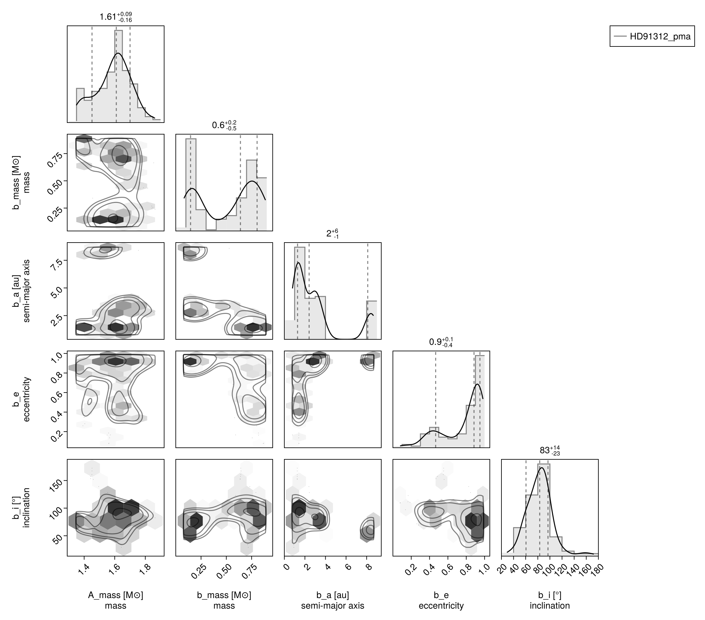
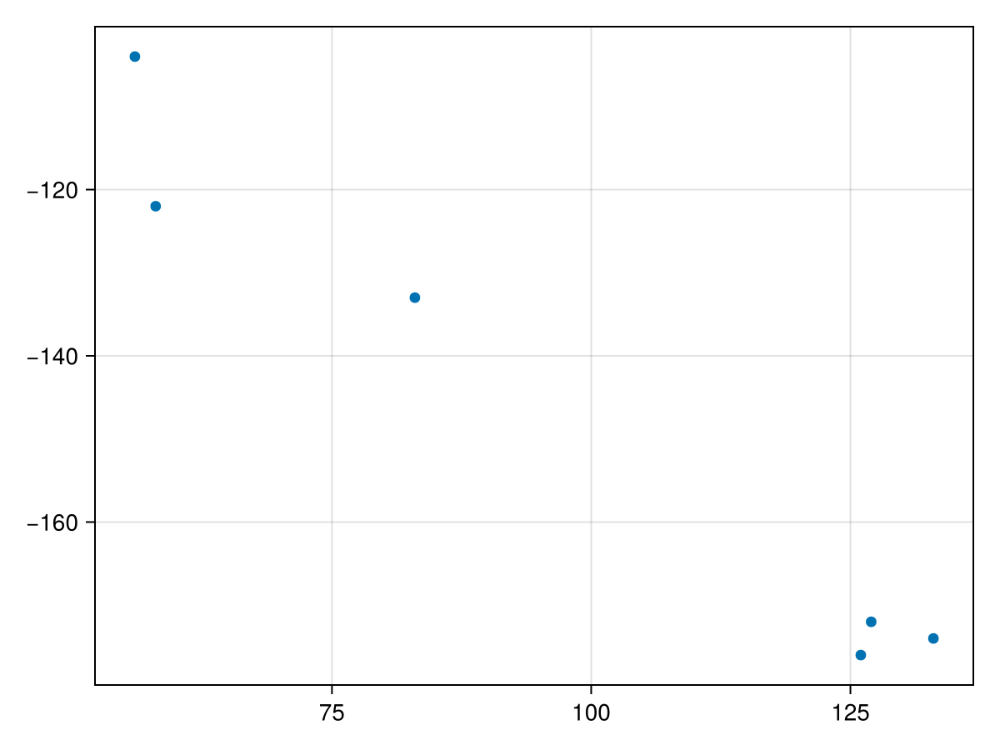
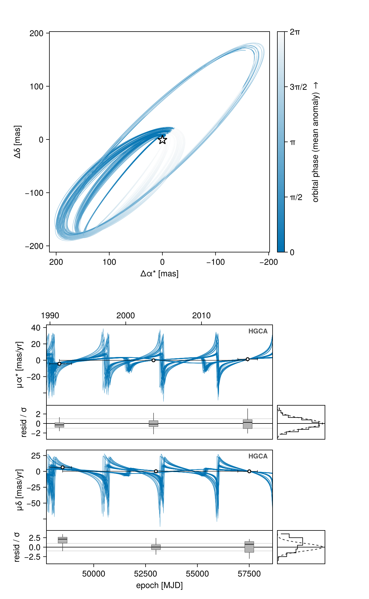
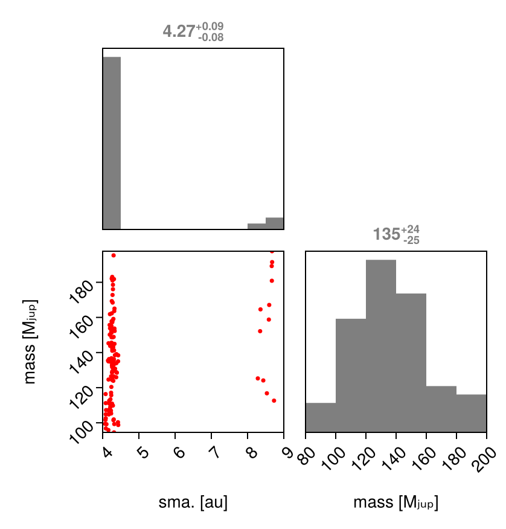
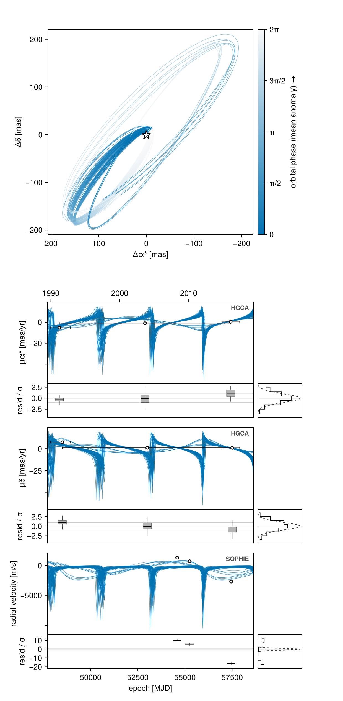
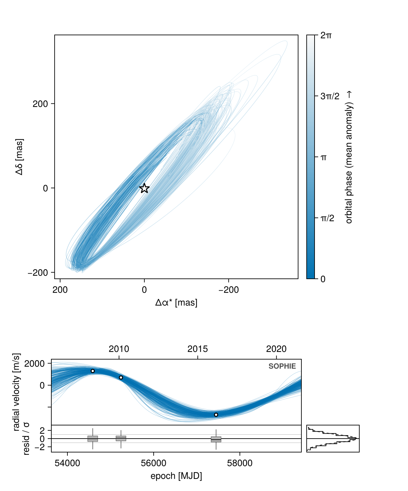
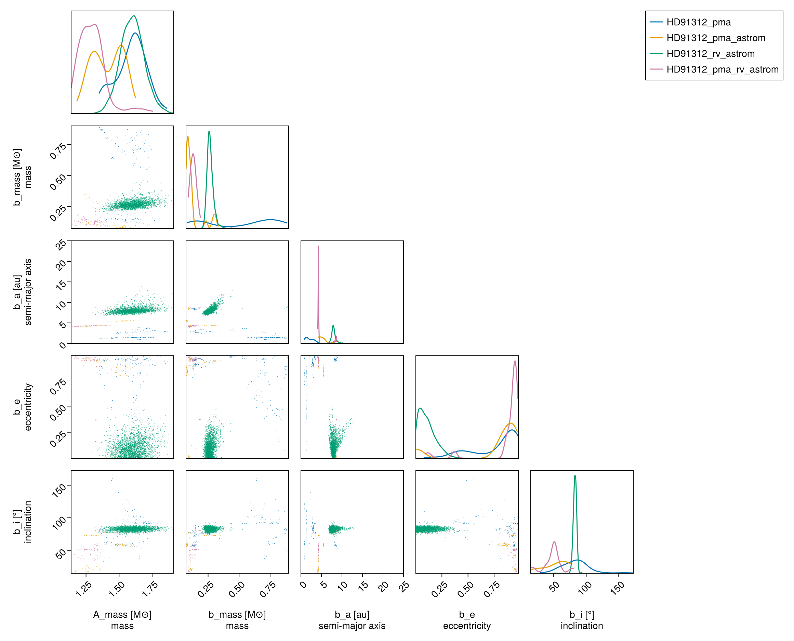

Astrometry, PMA, and RV
Octofitter.jl supports fitting orbit models to astrometric motion in the form of GAIA-Hipparcos proper motion anomaly (HGCA; https://arxiv.org/abs/2105.11662). These data points are calculated by finding the difference between a long term proper motion of a star between the Hipparcos and GAIA catalogs, and their proper motion calculated within the windows of each catalog. This gives four data points that can constrain the dynamical mass & orbits of planetary companions (assuming we subtract out the net trend).
If your star of interest is in the HGCA, all you need is it's GAIA DR3 ID number. You can find this number by searching for your target on SIMBAD.
For this tutorial, we will examine the star and companion HD 91312 A & B discovered by SCExAO. We will use their published astrometry and proper motion anomaly extracted from the HGCA.
We will also perform a model comparison: we will fit the same model to four different subsets of data to see how each dataset are impacting the final constraints. This is an important consistency check, especially with proper motion / absolute astrometry data which be susceptible to systematic errors.
The first step is to find the GAIA source ID for your object. For HD 91312, SIMBAD tells us the GAIA DR3 ID is 756291174721509376.
That page covers what this one leans on hardest: HGCAObs is a helper over G23HObs, and the G23H catalog it reads.
Model: PMA Only
Initial setup:
using Octofitter, Distributions, Random
using CairoMakie
using PairPlots
using PigeonsPrecompiling packages...
699.0 ms ? Unitful → ForwardDiffExt
790.5 ms ? PlanetOrbits → PlanetOrbitsMakieExt
Info Given OctofitterPairPlotsExt was explicitly requested, output will be shown live
┌ Warning: Module Octofitter with build ID fafbfcfd-a904-1b68-e213-e0459e7c71e9 is missing from the cache.
│ This may mean Octofitter [daf3887e-d01a-44a1-9d7e-98f15c5d69c9] does not support precompilation but is imported by a module that does.
└ @ Base loading.jl:2643
1237.4 ms ? Octofitter → OctofitterMakieExt
1183.1 ms ? Octofitter → OctofitterPairPlotsExt
2579.8 ms ? IntervalArithmetic → IntervalArithmeticForwardDiffExt
┌ Warning: Module Octofitter with build ID fafbfcfd-a904-1b68-e213-e0459e7c71e9 is missing from the cache.
│ This may mean Octofitter [daf3887e-d01a-44a1-9d7e-98f15c5d69c9] does not support precompilation but is imported by a module that does.
└ @ Base loading.jl:2643
Precompiling packages...
Info Given OctofitterPigeonsExt was explicitly requested, output will be shown live
┌ Warning: Module Octofitter with build ID fafbfcfd-a904-1b68-e213-e0459e7c71e9 is missing from the cache.
│ This may mean Octofitter [daf3887e-d01a-44a1-9d7e-98f15c5d69c9] does not support precompilation but is imported by a module that does.
└ @ Base loading.jl:2643
2304.4 ms ? Octofitter → OctofitterPigeonsExt
6110.9 ms ? Pigeons → PigeonsForwardDiffExt
┌ Warning: Module Octofitter with build ID fafbfcfd-a904-1b68-e213-e0459e7c71e9 is missing from the cache.
│ This may mean Octofitter [daf3887e-d01a-44a1-9d7e-98f15c5d69c9] does not support precompilation but is imported by a module that does.
└ @ Base loading.jl:2643
Precompiling packages...
Info Given PigeonsForwardDiffExt was explicitly requested, output will be shown live
┌ Warning: Module ForwardDiff with build ID fafbfcfd-67df-0408-1e83-85dc6648a6e9 is missing from the cache.
│ This may mean ForwardDiff [f6369f11-7733-5829-9624-2563aa707210] does not support precompilation but is imported by a module that does.
└ @ Base loading.jl:2643
4535.7 ms ? Pigeons → PigeonsForwardDiffExt
┌ Warning: Module ForwardDiff with build ID fafbfcfd-67df-0408-1e83-85dc6648a6e9 is missing from the cache.
│ This may mean ForwardDiff [f6369f11-7733-5829-9624-2563aa707210] does not support precompilation but is imported by a module that does.
└ @ Base loading.jl:2643We begin by finding orbits that are consistent with the astrometric motion. Later, we will add in relative astrometry to the fit from direct imaging to further constrain the planet's orbit and mass.
Compared to previous tutorials, we now add a prior on the mass of the companion, called mass. All masses are in solar masses — mjup is a plain multiplicative constant, so a Jupiter-mass prior reads LogUniform(0.5mjup, 1000mjup). There is also nothing to do to "place a prior on the host mass rather than the system total mass": every body carries its own mass, and an orbit's total mass comes from the hierarchy.
The bodies
A = Body(
name="A",
variables=@variables begin
mass ~ truncated(Normal(1.61, 0.1), lower=0.1) # Msol
flux_G = 1.0 # the host sets the contrast scale
flux_Hp = 1.0
end
)
planet_b = Body(
name="b",
about=A,
variables=@variables begin
mass ~ LogUniform(0.5mjup, 1000mjup) # Msol
a ~ LogUniform(0.1, 20)
e ~ Uniform(0, 0.999)
ω ~ Uniform(0, 2pi)
i ~ Sine() # the Sine() distribution is defined by Octofitter
Ω ~ Uniform(0, 2pi)
# `θ` (position angle) + `epoch` is a phase parametrization the orbit
# constructor understands directly.
θ ~ Uniform(0, 2pi)
epoch = 57423.0 # epoch of the GAIA measurement
flux_G = 0.0 # dark to Gaia…
flux_Hp = 0.0 # …and to Hipparcos
end
)The two flux_* lines are contrast ratios against the host — set the host to 1.0 and every other body's flux is a ratio — and they are how the model places the Gaia photocentre and modulates the Hipparcos abscissa. Give a luminous, unresolved companion a real prior here (flux_G ~ Uniform(0, 1)); omitting all four lines is legal and equivalent to 0.0.
Retrieving the HGCA
hgca_obs = HGCAObs(
gaia_id = 756291174721509376,
host = A,
companions = (planet_b,),
ref = Barycentre,
freeze_epochs = true, # fast but approximate; drop for a production fit
)
hgca_obs.table.kind6-element Vector{Symbol}:
:ra_hip
:dec_hip
:ra_hg
:dec_hg
:ra_dr3
:dec_dr3System Model & Specifying Proper Motion Anomaly
Now that we have our bodies, we create a system model to contain them. Observations are no longer attached to a planet — they are a flat list on the system, and each one names what it is a measurement of (target/host) and what it is measured against (ref).
We specify priors on plx as usual, but here we use the gaia_plx helper function to read the parallax and uncertainty directly from the Gaia DR3 catalog using its source ID.
We also add parameters for the star's long term proper motion. This is usually close to the long term trend between the Hipparcos and GAIA measurements.
When fitting HGCA data, use wide, uninformative priors for pmra and pmdec, such as Normal(0, 1000) (0 ± 1000 mas/yr). Do not use Gaia DR3 proper motion values as informative priors—this would double-count the information since the HGCA already incorporates Gaia astrometry and will constrain the system's proper motion through the likelihood. The pmra/pmdec parameters represent the center-of-mass proper motion, which the HGCA measurements help determine.
The example below uses Normal(-137, 10) only because we have independent prior knowledge of this system's proper motion from other sources—for a typical analysis, you should use wide priors like Normal(0, 1000).
plx, ra, dec, pmra, pmdec, rv, ref_epoch are reserved system-level names, and a partial set is rejected at model-build time. Declare all seven, or plx alone. Every model on this page that carries the HGCA declares all seven; the final RV + astrometry model, which has no absolute astrometry, declares only plx.
ra_deg = 158.30707896392835
dec_deg = 40.42555422701387
sys = System(
name="HD91312_pma",
bodies=[A, planet_b],
observations=[hgca_obs],
variables=@variables begin
plx ~ gaia_plx(gaia_id=756291174721509376)
# Priors on the center of mass proper motion
pmra ~ Normal(-137, 10)
pmdec ~ Normal(2, 10)
# The rest of the absolute frame
ra = $ra_deg
dec = $dec_deg
rv = 0.0 # m/s
ref_epoch = $(Octofitter.meta_gaia_DR3.ref_epoch_mjd)
end
)
model_pma = Octofitter.LogDensityModel(sys)LogDensityModel for System HD91312_pma of dimension 11 and 6 epochs with fields .ℓπcallback and .∇ℓπcallback
Sampling from the posterior (PMA only)
Because proper motion anomaly data is quite sparse, it can often produce multi-modal posteriors. If your orbit already has several relative astrometry or RV data points, this is less of an issue.
Every model on this page is sampled with Pigeons.jl's parallel tempering via octofit_pigeons, because HMC can only jump 2–3σ gaps between modes. The PMA-only model is where this matters most; the joint models further down are much better conditioned, and the explorer=SliceSampler() argument on the first three is what handles their sharper ridges.
chain_pma, pt = octofit_pigeons(model_pma, n_rounds=8, explorer=SliceSampler())
display(chain_pma)[ Info: Sampler running with multiple threads : true
[ Info: Likelihood evaluated with multiple threads: false
[ Info: [HD91312_pma] observing_geometry = true (user)
[ Info: [HD91312_pma] barycentric_lighttime = true (user)
[ Info: [HD91312_pma] observing_geometry = true (user)
[ Info: [HD91312_pma] barycentric_lighttime = true (user)
┌ Info: Starting values not provided for all parameters! Guessing starting point using global optimization:
│ num_params = 11
└ num_fixed = 0
┌ Warning: Pathfinder error: MethodError(copy, (SplittableRandoms.SplittableRandom(0xc82883f44ae5e0cb, 0xaabf13ae126f9159),), 0x0000000000009edc)
└ @ Octofitter ~/octo-maintenance/runner/actions-runner/_work/Octofitter.jl/Octofitter.jl/src/initialization.jl:933
┌ Warning: Using BBO result as fallback
└ @ Octofitter ~/octo-maintenance/runner/actions-runner/_work/Octofitter.jl/Octofitter.jl/src/initialization.jl:934
┌ Info: Found sample of initial positions
│ logpost_range = (-15.969552514849392, -15.969552514849392)
└ mean_logpost = -15.969552514849394
────────────────────────────────────────────────────────────────────────────────────────────────────────────────────────
scans restarts Λ Λ_var time(s) allc(B) log(Z₁/Z₀) min(α) mean(α) min(αₑ) mean(αₑ)
────────── ────────── ────────── ────────── ────────── ────────── ────────── ────────── ────────── ────────── ──────────
2 0 3.17 2.06 2.52 1.75e+09 -3.37e+04 0 0.831 1 1
4 0 2.45 4.73 1.17 3.02e+09 -29 0 0.768 1 1
8 0 4.92 6.7 1.99 5.35e+09 -16.3 3.89e-33 0.625 1 1
┌ Warning: Failed to construct the orbital system from these parameters
│ exception =
│ these orbits do not independently determine every body's position — the hierarchy is circular or redundant. Rows, as (exterior about interior):
│ 1: (:b,) about (:A,)
│ Stacktrace:
│ [1] error(s::String)
│ @ Base ./error.jl:44
│ [2] _err_singular(names::Tuple{Symbol, Symbol}, specs::Tuple{PlanetOrbits.RowSpec{2}})
│ @ PlanetOrbits ~/octo-maintenance/runner/actions-runner/_work/Octofitter.jl/Octofitter.jl/.planetorbits-v2/src/system.jl:287
│ [3] PlanetOrbits.System(bodyspec::Tuple{PlanetOrbits.Body{Float64, @NamedTuple{G::Float64, Hp::Float64}, :A}, PlanetOrbits.Body{Float64, @NamedTuple{G::Float64, Hp::Float64}, :b}}, orbits::Tuple{PlanetOrbits.Orbit{PlanetOrbits.Body{Float64, @NamedTuple{G::Float64, Hp::Float64}, :b}, PlanetOrbits.Body{Float64, @NamedTuple{G::Float64, Hp::Float64}, :A}, Float64}}; kwargs::@Kwargs{plx::Float64, ra::Float64, dec::Float64, pmra::Float64, pmdec::Float64, rv::Float64, ref_epoch::Float64})
│ @ PlanetOrbits ~/octo-maintenance/runner/actions-runner/_work/Octofitter.jl/Octofitter.jl/.planetorbits-v2/src/system.jl:141
│ [4] System
│ @ ~/octo-maintenance/runner/actions-runner/_work/Octofitter.jl/Octofitter.jl/.planetorbits-v2/src/system.jl:104 [inlined]
│ [5] macro expansion
│ @ ~/octo-maintenance/runner/actions-runner/_work/Octofitter.jl/Octofitter.jl/src/model/codegen.jl:579 [inlined]
│ [6] macro expansion
│ @ ~/.julia/packages/RuntimeGeneratedFunctions/odmYb/src/RuntimeGeneratedFunctions.jl:247 [inlined]
│ [7] macro expansion
│ @ ./none:0 [inlined]
│ [8] generated_callfunc
│ @ ./none:0 [inlined]
│ [9] RuntimeGeneratedFunction
│ @ ~/.julia/packages/RuntimeGeneratedFunctions/odmYb/src/RuntimeGeneratedFunctions.jl:234 [inlined]
│ [10] GeneratedLnLike
│ @ ~/octo-maintenance/runner/actions-runner/_work/Octofitter.jl/Octofitter.jl/src/model/codegen.jl:662 [inlined]
│ [11] (::Octofitter.var"#ℓπcallback#272"{System{Tuple{Body{Octofitter.Priors, Octofitter.Derived, Tuple{}}, Body{Octofitter.Priors, Octofitter.Derived, Tuple{}}}, Tuple{Octofitter.BlankLikelihood}, Tuple{}, Octofitter.Priors, Octofitter.Derived, KeplerianApprox{PlanetOrbits.Auto}}, RuntimeGeneratedFunctions.RuntimeGeneratedFunction{(:arr,), Octofitter.var"#_RGF_ModTag", Octofitter.var"#_RGF_ModTag", (0xf2153c46, 0x75cb35e5, 0x9b0d88f8, 0xf2cfa93d, 0xcf7c60bf), Expr}, RuntimeGeneratedFunctions.RuntimeGeneratedFunction{(:arr,), Octofitter.var"#_RGF_ModTag", Octofitter.var"#_RGF_ModTag", (0xe454da15, 0x5382f190, 0x2bd7480e, 0xf3290c5b, 0xc5919f19), Expr}, RuntimeGeneratedFunctions.RuntimeGeneratedFunction{(:arr, :sampled), Octofitter.var"#_RGF_ModTag", Octofitter.var"#_RGF_ModTag", (0x184a8122, 0x752c9cc8, 0x6fc90397, 0xa84341b3, 0xe8877dc8), Expr}, Octofitter.GeneratedLnLike{RuntimeGeneratedFunctions.RuntimeGeneratedFunction{(:θ,), Octofitter.var"#_RGF_ModTag", Octofitter.var"#_RGF_ModTag", (0xa02f802e, 0x91db266d, 0x76b07f9b, 0x56229b9a, 0xeada8bb4), Expr}, RuntimeGeneratedFunctions.RuntimeGeneratedFunction{(:system, :θ, :posys), Octofitter.var"#_RGF_ModTag", Octofitter.var"#_RGF_ModTag", (0xe9576df9, 0x9237411b, 0x57f300be, 0x19f9d602, 0x404de1dd), Expr}}, Octofitter.var"#ℓπcallback#263#273"})(θ_transformed::Vector{Float64}, system::System{Tuple{Body{Octofitter.Priors, Octofitter.Derived, Tuple{}}, Body{Octofitter.Priors, Octofitter.Derived, Tuple{}}}, Tuple{Octofitter.BlankLikelihood}, Tuple{}, Octofitter.Priors, Octofitter.Derived, KeplerianApprox{PlanetOrbits.Auto}}, arr2nt::RuntimeGeneratedFunctions.RuntimeGeneratedFunction{(:arr,), Octofitter.var"#_RGF_ModTag", Octofitter.var"#_RGF_ModTag", (0xf2153c46, 0x75cb35e5, 0x9b0d88f8, 0xf2cfa93d, 0xcf7c60bf), Expr}, Bijector_invlinkvec::RuntimeGeneratedFunctions.RuntimeGeneratedFunction{(:arr,), Octofitter.var"#_RGF_ModTag", Octofitter.var"#_RGF_ModTag", (0xe454da15, 0x5382f190, 0x2bd7480e, 0xf3290c5b, 0xc5919f19), Expr}, ln_prior_transformed::RuntimeGeneratedFunctions.RuntimeGeneratedFunction{(:arr, :sampled), Octofitter.var"#_RGF_ModTag", Octofitter.var"#_RGF_ModTag", (0x184a8122, 0x752c9cc8, 0x6fc90397, 0xa84341b3, 0xe8877dc8), Expr}, ln_like_generated::Octofitter.GeneratedLnLike{RuntimeGeneratedFunctions.RuntimeGeneratedFunction{(:θ,), Octofitter.var"#_RGF_ModTag", Octofitter.var"#_RGF_ModTag", (0xa02f802e, 0x91db266d, 0x76b07f9b, 0x56229b9a, 0xeada8bb4), Expr}, RuntimeGeneratedFunctions.RuntimeGeneratedFunction{(:system, :θ, :posys), Octofitter.var"#_RGF_ModTag", Octofitter.var"#_RGF_ModTag", (0xe9576df9, 0x9237411b, 0x57f300be, 0x19f9d602, 0x404de1dd), Expr}}; sampled::Bool)
│ @ Octofitter ~/octo-maintenance/runner/actions-runner/_work/Octofitter.jl/Octofitter.jl/src/logdensitymodel.jl:242
│ [12] ℓπcallback (repeats 6 times)
│ @ ~/octo-maintenance/runner/actions-runner/_work/Octofitter.jl/Octofitter.jl/src/logdensitymodel.jl:218 [inlined]
│ [13] LogDensityModel
│ @ ~/octo-maintenance/runner/actions-runner/_work/Octofitter.jl/Octofitter.jl/ext/OctofitterPigeonsExt.jl:23 [inlined]
│ [14] InterpolatedLogPotential
│ @ ~/.julia/packages/Pigeons/y3Kae/src/paths/InterpolatedLogPotential.jl:16 [inlined]
│ [15] slice_double(h::Pigeons.SliceSampler, replica::Pigeons.Replica{Vector{Float64}, @NamedTuple{explorer_acceptance_pr::OnlineStatsBase.GroupBy{Int64, Number, OnlineStatsBase.Mean{Float64, OnlineStatsBase.EqualWeight}}, explorer_n_steps::OnlineStatsBase.GroupBy{Int64, Number, OnlineStatsBase.Sum{Float64}}, swap_acceptance_pr::OnlineStatsBase.GroupBy{Tuple{Int64, Int64}, Number, OnlineStatsBase.Mean{Float64, OnlineStatsBase.EqualWeight}}, log_sum_ratio::OnlineStatsBase.GroupBy{Tuple{Int64, Int64}, Number, Pigeons.LogSum{Float64}}, traces::Dict{Pair{Int64, Int64}, Any}, round_trip::Pigeons.RoundTripRecorder, timing_extrema::NonReproducible{...}, allocation_extrema::NonReproducible{...}, index_process::Dict{Int64, Vector{Int64}}, _transformed_online::Pigeons.OnlineStateRecorder}}, z::Float64, pointer::Base.RefArray{Float64, Vector{Float64}, Nothing}, log_potential::InterpolatedLogPotential{...})
│ @ Pigeons ~/.julia/packages/Pigeons/y3Kae/src/explorers/SliceSampler.jl:118
│ [16] slice_sample_coord!
│ @ ~/.julia/packages/Pigeons/y3Kae/src/explorers/SliceSampler.jl:92 [inlined]
│ [17] slice_sample!(h::Pigeons.SliceSampler, state::Vector{Float64}, log_potential::InterpolatedLogPotential{...}, cached_lp::Float64, replica::Pigeons.Replica{Vector{Float64}, @NamedTuple{explorer_acceptance_pr::OnlineStatsBase.GroupBy{Int64, Number, OnlineStatsBase.Mean{Float64, OnlineStatsBase.EqualWeight}}, explorer_n_steps::OnlineStatsBase.GroupBy{Int64, Number, OnlineStatsBase.Sum{Float64}}, swap_acceptance_pr::OnlineStatsBase.GroupBy{Tuple{Int64, Int64}, Number, OnlineStatsBase.Mean{Float64, OnlineStatsBase.EqualWeight}}, log_sum_ratio::OnlineStatsBase.GroupBy{Tuple{Int64, Int64}, Number, Pigeons.LogSum{Float64}}, traces::Dict{Pair{Int64, Int64}, Any}, round_trip::Pigeons.RoundTripRecorder, timing_extrema::NonReproducible{...}, allocation_extrema::NonReproducible{...}, index_process::Dict{Int64, Vector{Int64}}, _transformed_online::Pigeons.OnlineStateRecorder}})
│ @ Pigeons ~/.julia/packages/Pigeons/y3Kae/src/explorers/SliceSampler.jl:49
│ [18] step!(explorer::Pigeons.SliceSampler, replica::Pigeons.Replica{Vector{Float64}, @NamedTuple{explorer_acceptance_pr::OnlineStatsBase.GroupBy{Int64, Number, OnlineStatsBase.Mean{Float64, OnlineStatsBase.EqualWeight}}, explorer_n_steps::OnlineStatsBase.GroupBy{Int64, Number, OnlineStatsBase.Sum{Float64}}, swap_acceptance_pr::OnlineStatsBase.GroupBy{Tuple{Int64, Int64}, Number, OnlineStatsBase.Mean{Float64, OnlineStatsBase.EqualWeight}}, log_sum_ratio::OnlineStatsBase.GroupBy{Tuple{Int64, Int64}, Number, Pigeons.LogSum{Float64}}, traces::Dict{Pair{Int64, Int64}, Any}, round_trip::Pigeons.RoundTripRecorder, timing_extrema::NonReproducible{...}, allocation_extrema::NonReproducible{...}, index_process::Dict{Int64, Vector{Int64}}, _transformed_online::Pigeons.OnlineStateRecorder}}, shared::Shared{...})
│ @ Pigeons ~/.julia/packages/Pigeons/y3Kae/src/explorers/SliceSampler.jl:28
│ [19] explore!(pt::PT{...}, replica::Pigeons.Replica{Vector{Float64}, @NamedTuple{explorer_acceptance_pr::OnlineStatsBase.GroupBy{Int64, Number, OnlineStatsBase.Mean{Float64, OnlineStatsBase.EqualWeight}}, explorer_n_steps::OnlineStatsBase.GroupBy{Int64, Number, OnlineStatsBase.Sum{Float64}}, swap_acceptance_pr::OnlineStatsBase.GroupBy{Tuple{Int64, Int64}, Number, OnlineStatsBase.Mean{Float64, OnlineStatsBase.EqualWeight}}, log_sum_ratio::OnlineStatsBase.GroupBy{Tuple{Int64, Int64}, Number, Pigeons.LogSum{Float64}}, traces::Dict{Pair{Int64, Int64}, Any}, round_trip::Pigeons.RoundTripRecorder, timing_extrema::NonReproducible{...}, allocation_extrema::NonReproducible{...}, index_process::Dict{Int64, Vector{Int64}}, _transformed_online::Pigeons.OnlineStateRecorder}}, explorer::Pigeons.SliceSampler)
│ @ Pigeons ~/.julia/packages/Pigeons/y3Kae/src/pt/pigeons.jl:107
│ [20] macro expansion
│ @ ~/.julia/packages/Pigeons/y3Kae/src/pt/pigeons.jl:84 [inlined]
│ [21] (::Pigeons.var"#explore!##0#explore!##1"{Pigeons.var"#explore!##2#explore!##3"{PT{...}, Pigeons.SliceSampler, Vector{Pigeons.Replica{Vector{Float64}, @NamedTuple{explorer_acceptance_pr::OnlineStatsBase.GroupBy{Int64, Number, OnlineStatsBase.Mean{Float64, OnlineStatsBase.EqualWeight}}, explorer_n_steps::OnlineStatsBase.GroupBy{Int64, Number, OnlineStatsBase.Sum{Float64}}, swap_acceptance_pr::OnlineStatsBase.GroupBy{Tuple{Int64, Int64}, Number, OnlineStatsBase.Mean{Float64, OnlineStatsBase.EqualWeight}}, log_sum_ratio::OnlineStatsBase.GroupBy{Tuple{Int64, Int64}, Number, Pigeons.LogSum{Float64}}, traces::Dict{Pair{Int64, Int64}, Any}, round_trip::Pigeons.RoundTripRecorder, timing_extrema::NonReproducible{...}, allocation_extrema::NonReproducible{...}, index_process::Dict{Int64, Vector{Int64}}, _transformed_online::Pigeons.OnlineStateRecorder}}}}})(tid::Int64; onethread::Bool)
│ @ Pigeons ./threadingconstructs.jl:279
│ [22] #explore!##0
│ @ ./threadingconstructs.jl:246 [inlined]
│ [23] (::Base.Threads.var"#threading_run##0#threading_run##1"{Pigeons.var"#explore!##0#explore!##1"{Pigeons.var"#explore!##2#explore!##3"{PT{...}, Pigeons.SliceSampler, Vector{Pigeons.Replica{Vector{Float64}, @NamedTuple{explorer_acceptance_pr::OnlineStatsBase.GroupBy{Int64, Number, OnlineStatsBase.Mean{Float64, OnlineStatsBase.EqualWeight}}, explorer_n_steps::OnlineStatsBase.GroupBy{Int64, Number, OnlineStatsBase.Sum{Float64}}, swap_acceptance_pr::OnlineStatsBase.GroupBy{Tuple{Int64, Int64}, Number, OnlineStatsBase.Mean{Float64, OnlineStatsBase.EqualWeight}}, log_sum_ratio::OnlineStatsBase.GroupBy{Tuple{Int64, Int64}, Number, Pigeons.LogSum{Float64}}, traces::Dict{Pair{Int64, Int64}, Any}, round_trip::Pigeons.RoundTripRecorder, timing_extrema::NonReproducible{...}, allocation_extrema::NonReproducible{...}, index_process::Dict{Int64, Vector{Int64}}, _transformed_online::Pigeons.OnlineStateRecorder}}}}}, Int64})()
│ @ Base.Threads ./threadingconstructs.jl:178
└ @ Octofitter ~/octo-maintenance/runner/actions-runner/_work/Octofitter.jl/Octofitter.jl/src/model/codegen.jl:665
16 0 6.06 6.86 5.28 1.09e+10 -17.5 1.43e-09 0.583 1 1
32 0 7.33 7.39 8.84 2.15e+10 -19.2 0.0625 0.525 1 1
64 1 7.03 6.08 19.4 4.4e+10 -22 0.0955 0.577 1 1
128 0 7.64 6.14 37.6 9.05e+10 -21.8 0.12 0.555 0.999 1
256 5 7.96 6.19 74.2 1.79e+11 -22.1 0.338 0.543 1 1
────────────────────────────────────────────────────────────────────────────────────────────────────────────────────────Pair Plot
If we wish to examine the covariance between parameters in more detail, we can construct a pair-plot (aka. corner plot).
# Create a corner plot / pair plot.
# We can access any property from the chain specified in Variables
octocorner(model_pma, chain_pma, small=true)
Model: PMA & Relative Astrometry
The first orbit fit to only Hipparcos/GAIA data was very unconstrained. We will now add six epochs of relative astrometry (measured from direct images) gathered from the discovery paper.
astrom_dat = Table(;
epoch = [mjd("2016-12-15"), mjd("2017-03-12"), mjd("2017-03-13"), mjd("2018-02-08"), mjd("2018-11-28"), mjd("2018-12-15")],
ra = [133., 126., 127., 083., 058., 056.],
dec = [-174., -176., -172., -133., -122., -104.],
σ_ra = [07.0, 04.0, 04.0, 10.0, 10.0, 08.0],
σ_dec = [07.0, 04.0, 04.0, 10.0, 20.0, 08.0],
cor = [0.2, 0.3, 0.1, 0.4, 0.3, 0.2]
)
astrom_obs = RelAstromObs(
astrom_dat,
target = planet_b, # the body the offsets are of
ref = A, # …and the body they are measured against
name = "SCExAO",
variables = @variables begin
# Fixed values for this example - could be free variables:
jitter = 0 # mas [could use: jitter ~ Uniform(0, 10)]
northangle = 0 # radians [could use: northangle ~ Normal(0, deg2rad(1))]
platescale = 1 # relative [could use: platescale ~ truncated(Normal(1, 0.01), lower=0)]
end
)
scatter(astrom_obs.table.ra, astrom_obs.table.dec)
We use the same bodies as before, but now condition the model on the astrometry by adding it to the system's observations list. We wrap it in ObsPriorONeil2019 — the observable-based prior of O'Neil et al. (2019), which reweights the orbit prior by the Jacobian of the observables.
List ObsPriorONeil2019(astrom_obs) in observations=, not the wrapper and astrom_obs. Listing both counts the astrometry twice.
The wrapper needs to know which orbit the prior applies to. It defaults to the wrapped observation's target, which is correct here and for relative RVs. A stellar-reflex RadialVelocityObs(…; target=A, ref=Barycentre) has no orbit of its own, so wrapping one requires ObsPriorONeil2019(rvs; orbit=planet_b) explicitly (orbit=(b, c) sums over several orbits).
sys_astrom = System(
name="HD91312_pma_astrom",
bodies=[A, planet_b],
observations=[hgca_obs, ObsPriorONeil2019(astrom_obs)],
variables=@variables begin
plx ~ gaia_plx(gaia_id=756291174721509376)
pmra ~ Normal(-137, 10)
pmdec ~ Normal(2, 10)
ra = $ra_deg
dec = $dec_deg
rv = 0.0
ref_epoch = $(Octofitter.meta_gaia_DR3.ref_epoch_mjd)
end
)
model_pma_astrom = Octofitter.LogDensityModel(sys_astrom, verbosity=4)
chain_pma_astrom, pt = octofit_pigeons(model_pma_astrom, n_rounds=7, explorer=SliceSampler())[ Info: [HD91312_pma_astrom] observing_geometry = true (auto): "HGCA" does not report comparable predictions — over 300 prior draws (seed 0xc70f177e5000001)
[ Info: [HD91312_pma_astrom] barycentric_lighttime = true (auto): "HGCA" does not report comparable predictions — over 300 prior draws (seed 0xc70f177e5000001)
[ Info: Preparing model
┌ Info: Determined number of free variables
└ D = 11
┌ Info: Determined number type
└ T = Float64
ℓπcallback(θ): 0.000103 seconds (42 allocations: 73.719 KiB)
∇ℓπcallback(θ): 1.263742 seconds (2.73 M allocations: 124.102 MiB, 12.06% gc time, 99.95% compilation time)
[ Info: Sampler running with multiple threads : true
[ Info: Likelihood evaluated with multiple threads: false
[ Info: [HD91312_pma_astrom] observing_geometry = true (user)
[ Info: [HD91312_pma_astrom] barycentric_lighttime = true (user)
[ Info: [HD91312_pma_astrom] observing_geometry = true (user)
[ Info: [HD91312_pma_astrom] barycentric_lighttime = true (user)
┌ Info: Starting values not provided for all parameters! Guessing starting point using global optimization:
│ num_params = 11
└ num_fixed = 0
┌ Warning: Verbosity toggle: unrecognized_stop_reason
│ Unrecognized stop reason: Too many steps (101) without any function evaluations (probably search has converged). Defaulting to ReturnCode.Default.
└ @ OptimizationBase ~/.julia/packages/OptimizationBase/y1GZt/src/utils.jl:170
┌ Warning: Pathfinder error: MethodError(copy, (SplittableRandoms.SplittableRandom(0xc82883f44ae5e0cb, 0xaabf13ae126f9159),), 0x0000000000009f05)
└ @ Octofitter ~/octo-maintenance/runner/actions-runner/_work/Octofitter.jl/Octofitter.jl/src/initialization.jl:933
┌ Warning: Using BBO result as fallback
└ @ Octofitter ~/octo-maintenance/runner/actions-runner/_work/Octofitter.jl/Octofitter.jl/src/initialization.jl:934
┌ Info: Found sample of initial positions
│ logpost_range = (-94.27875636580373, -94.27875636580373)
└ mean_logpost = -94.27875636580386
────────────────────────────────────────────────────────────────────────────────────────────────────────────────────────
scans restarts Λ Λ_var time(s) allc(B) log(Z₁/Z₀) min(α) mean(α) min(αₑ) mean(αₑ)
────────── ────────── ────────── ────────── ────────── ────────── ────────── ────────── ────────── ────────── ──────────
2 0 2.11 3.13 2.19 1.91e+09 -3.39e+04 0 0.831 1 1
4 0 7.25 3.99 1.24 3.35e+09 -970 0 0.638 1 1
8 0 7.34 6.09 2.54 6.2e+09 -278 8.78e-164 0.567 0.996 1
16 0 8.75 6.15 5.18 1.18e+10 -143 3.5e-44 0.519 1 1
32 0 9.39 8.13 10.9 2.28e+10 -98.8 0.011 0.435 0.999 1
┌ Warning: Failed to construct the orbital system from these parameters
│ exception =
│ these orbits do not independently determine every body's position — the hierarchy is circular or redundant. Rows, as (exterior about interior):
│ 1: (:b,) about (:A,)
│ Stacktrace:
│ [1] error(s::String)
│ @ Base ./error.jl:44
│ [2] _err_singular(names::Tuple{Symbol, Symbol}, specs::Tuple{PlanetOrbits.RowSpec{2}})
│ @ PlanetOrbits ~/octo-maintenance/runner/actions-runner/_work/Octofitter.jl/Octofitter.jl/.planetorbits-v2/src/system.jl:287
│ [3] PlanetOrbits.System(bodyspec::Tuple{PlanetOrbits.Body{Float64, @NamedTuple{G::Float64, Hp::Float64}, :A}, PlanetOrbits.Body{Float64, @NamedTuple{G::Float64, Hp::Float64}, :b}}, orbits::Tuple{PlanetOrbits.Orbit{PlanetOrbits.Body{Float64, @NamedTuple{G::Float64, Hp::Float64}, :b}, PlanetOrbits.Body{Float64, @NamedTuple{G::Float64, Hp::Float64}, :A}, Float64}}; kwargs::@Kwargs{plx::Float64, ra::Float64, dec::Float64, pmra::Float64, pmdec::Float64, rv::Float64, ref_epoch::Float64})
│ @ PlanetOrbits ~/octo-maintenance/runner/actions-runner/_work/Octofitter.jl/Octofitter.jl/.planetorbits-v2/src/system.jl:141
│ [4] System
│ @ ~/octo-maintenance/runner/actions-runner/_work/Octofitter.jl/Octofitter.jl/.planetorbits-v2/src/system.jl:104 [inlined]
│ [5] macro expansion
│ @ ~/octo-maintenance/runner/actions-runner/_work/Octofitter.jl/Octofitter.jl/src/model/codegen.jl:579 [inlined]
│ [6] macro expansion
│ @ ~/.julia/packages/RuntimeGeneratedFunctions/odmYb/src/RuntimeGeneratedFunctions.jl:247 [inlined]
│ [7] macro expansion
│ @ ./none:0 [inlined]
│ [8] generated_callfunc
│ @ ./none:0 [inlined]
│ [9] RuntimeGeneratedFunction
│ @ ~/.julia/packages/RuntimeGeneratedFunctions/odmYb/src/RuntimeGeneratedFunctions.jl:234 [inlined]
│ [10] GeneratedLnLike
│ @ ~/octo-maintenance/runner/actions-runner/_work/Octofitter.jl/Octofitter.jl/src/model/codegen.jl:662 [inlined]
│ [11] (::Octofitter.var"#ℓπcallback#272"{System{Tuple{Body{Octofitter.Priors, Octofitter.Derived, Tuple{}}, Body{Octofitter.Priors, Octofitter.Derived, Tuple{}}}, Tuple{Octofitter.BlankLikelihood, Octofitter.BlankLikelihood}, Tuple{}, Octofitter.Priors, Octofitter.Derived, KeplerianApprox{PlanetOrbits.Auto}}, RuntimeGeneratedFunctions.RuntimeGeneratedFunction{(:arr,), Octofitter.var"#_RGF_ModTag", Octofitter.var"#_RGF_ModTag", (0xae2d8e7d, 0x8e804686, 0x33f3766f, 0xd4d797df, 0x29ea0133), Expr}, RuntimeGeneratedFunctions.RuntimeGeneratedFunction{(:arr,), Octofitter.var"#_RGF_ModTag", Octofitter.var"#_RGF_ModTag", (0xe454da15, 0x5382f190, 0x2bd7480e, 0xf3290c5b, 0xc5919f19), Expr}, RuntimeGeneratedFunctions.RuntimeGeneratedFunction{(:arr, :sampled), Octofitter.var"#_RGF_ModTag", Octofitter.var"#_RGF_ModTag", (0x184a8122, 0x752c9cc8, 0x6fc90397, 0xa84341b3, 0xe8877dc8), Expr}, Octofitter.GeneratedLnLike{RuntimeGeneratedFunctions.RuntimeGeneratedFunction{(:θ,), Octofitter.var"#_RGF_ModTag", Octofitter.var"#_RGF_ModTag", (0xa02f802e, 0x91db266d, 0x76b07f9b, 0x56229b9a, 0xeada8bb4), Expr}, RuntimeGeneratedFunctions.RuntimeGeneratedFunction{(:system, :θ, :posys), Octofitter.var"#_RGF_ModTag", Octofitter.var"#_RGF_ModTag", (0x35ad8771, 0x0ac54e3e, 0x928fe21e, 0xb66ae207, 0xf3365016), Expr}}, Octofitter.var"#ℓπcallback#263#273"})(θ_transformed::Vector{Float64}, system::System{Tuple{Body{Octofitter.Priors, Octofitter.Derived, Tuple{}}, Body{Octofitter.Priors, Octofitter.Derived, Tuple{}}}, Tuple{Octofitter.BlankLikelihood, Octofitter.BlankLikelihood}, Tuple{}, Octofitter.Priors, Octofitter.Derived, KeplerianApprox{PlanetOrbits.Auto}}, arr2nt::RuntimeGeneratedFunctions.RuntimeGeneratedFunction{(:arr,), Octofitter.var"#_RGF_ModTag", Octofitter.var"#_RGF_ModTag", (0xae2d8e7d, 0x8e804686, 0x33f3766f, 0xd4d797df, 0x29ea0133), Expr}, Bijector_invlinkvec::RuntimeGeneratedFunctions.RuntimeGeneratedFunction{(:arr,), Octofitter.var"#_RGF_ModTag", Octofitter.var"#_RGF_ModTag", (0xe454da15, 0x5382f190, 0x2bd7480e, 0xf3290c5b, 0xc5919f19), Expr}, ln_prior_transformed::RuntimeGeneratedFunctions.RuntimeGeneratedFunction{(:arr, :sampled), Octofitter.var"#_RGF_ModTag", Octofitter.var"#_RGF_ModTag", (0x184a8122, 0x752c9cc8, 0x6fc90397, 0xa84341b3, 0xe8877dc8), Expr}, ln_like_generated::Octofitter.GeneratedLnLike{RuntimeGeneratedFunctions.RuntimeGeneratedFunction{(:θ,), Octofitter.var"#_RGF_ModTag", Octofitter.var"#_RGF_ModTag", (0xa02f802e, 0x91db266d, 0x76b07f9b, 0x56229b9a, 0xeada8bb4), Expr}, RuntimeGeneratedFunctions.RuntimeGeneratedFunction{(:system, :θ, :posys), Octofitter.var"#_RGF_ModTag", Octofitter.var"#_RGF_ModTag", (0x35ad8771, 0x0ac54e3e, 0x928fe21e, 0xb66ae207, 0xf3365016), Expr}}; sampled::Bool)
│ @ Octofitter ~/octo-maintenance/runner/actions-runner/_work/Octofitter.jl/Octofitter.jl/src/logdensitymodel.jl:242
│ [12] ℓπcallback (repeats 6 times)
│ @ ~/octo-maintenance/runner/actions-runner/_work/Octofitter.jl/Octofitter.jl/src/logdensitymodel.jl:218 [inlined]
│ [13] LogDensityModel
│ @ ~/octo-maintenance/runner/actions-runner/_work/Octofitter.jl/Octofitter.jl/ext/OctofitterPigeonsExt.jl:23 [inlined]
│ [14] InterpolatedLogPotential
│ @ ~/.julia/packages/Pigeons/y3Kae/src/paths/InterpolatedLogPotential.jl:16 [inlined]
│ [15] slice_double(h::Pigeons.SliceSampler, replica::Pigeons.Replica{Vector{Float64}, @NamedTuple{explorer_acceptance_pr::OnlineStatsBase.GroupBy{Int64, Number, OnlineStatsBase.Mean{Float64, OnlineStatsBase.EqualWeight}}, explorer_n_steps::OnlineStatsBase.GroupBy{Int64, Number, OnlineStatsBase.Sum{Float64}}, swap_acceptance_pr::OnlineStatsBase.GroupBy{Tuple{Int64, Int64}, Number, OnlineStatsBase.Mean{Float64, OnlineStatsBase.EqualWeight}}, log_sum_ratio::OnlineStatsBase.GroupBy{Tuple{Int64, Int64}, Number, Pigeons.LogSum{Float64}}, traces::Dict{Pair{Int64, Int64}, Any}, round_trip::Pigeons.RoundTripRecorder, timing_extrema::NonReproducible{...}, allocation_extrema::NonReproducible{...}, index_process::Dict{Int64, Vector{Int64}}, _transformed_online::Pigeons.OnlineStateRecorder}}, z::Float64, pointer::Base.RefArray{Float64, Vector{Float64}, Nothing}, log_potential::InterpolatedLogPotential{...})
│ @ Pigeons ~/.julia/packages/Pigeons/y3Kae/src/explorers/SliceSampler.jl:118
│ [16] slice_sample_coord!
│ @ ~/.julia/packages/Pigeons/y3Kae/src/explorers/SliceSampler.jl:92 [inlined]
│ [17] slice_sample!(h::Pigeons.SliceSampler, state::Vector{Float64}, log_potential::InterpolatedLogPotential{...}, cached_lp::Float64, replica::Pigeons.Replica{Vector{Float64}, @NamedTuple{explorer_acceptance_pr::OnlineStatsBase.GroupBy{Int64, Number, OnlineStatsBase.Mean{Float64, OnlineStatsBase.EqualWeight}}, explorer_n_steps::OnlineStatsBase.GroupBy{Int64, Number, OnlineStatsBase.Sum{Float64}}, swap_acceptance_pr::OnlineStatsBase.GroupBy{Tuple{Int64, Int64}, Number, OnlineStatsBase.Mean{Float64, OnlineStatsBase.EqualWeight}}, log_sum_ratio::OnlineStatsBase.GroupBy{Tuple{Int64, Int64}, Number, Pigeons.LogSum{Float64}}, traces::Dict{Pair{Int64, Int64}, Any}, round_trip::Pigeons.RoundTripRecorder, timing_extrema::NonReproducible{...}, allocation_extrema::NonReproducible{...}, index_process::Dict{Int64, Vector{Int64}}, _transformed_online::Pigeons.OnlineStateRecorder}})
│ @ Pigeons ~/.julia/packages/Pigeons/y3Kae/src/explorers/SliceSampler.jl:49
│ [18] step!(explorer::Pigeons.SliceSampler, replica::Pigeons.Replica{Vector{Float64}, @NamedTuple{explorer_acceptance_pr::OnlineStatsBase.GroupBy{Int64, Number, OnlineStatsBase.Mean{Float64, OnlineStatsBase.EqualWeight}}, explorer_n_steps::OnlineStatsBase.GroupBy{Int64, Number, OnlineStatsBase.Sum{Float64}}, swap_acceptance_pr::OnlineStatsBase.GroupBy{Tuple{Int64, Int64}, Number, OnlineStatsBase.Mean{Float64, OnlineStatsBase.EqualWeight}}, log_sum_ratio::OnlineStatsBase.GroupBy{Tuple{Int64, Int64}, Number, Pigeons.LogSum{Float64}}, traces::Dict{Pair{Int64, Int64}, Any}, round_trip::Pigeons.RoundTripRecorder, timing_extrema::NonReproducible{...}, allocation_extrema::NonReproducible{...}, index_process::Dict{Int64, Vector{Int64}}, _transformed_online::Pigeons.OnlineStateRecorder}}, shared::Shared{...})
│ @ Pigeons ~/.julia/packages/Pigeons/y3Kae/src/explorers/SliceSampler.jl:28
│ [19] explore!(pt::PT{...}, replica::Pigeons.Replica{Vector{Float64}, @NamedTuple{explorer_acceptance_pr::OnlineStatsBase.GroupBy{Int64, Number, OnlineStatsBase.Mean{Float64, OnlineStatsBase.EqualWeight}}, explorer_n_steps::OnlineStatsBase.GroupBy{Int64, Number, OnlineStatsBase.Sum{Float64}}, swap_acceptance_pr::OnlineStatsBase.GroupBy{Tuple{Int64, Int64}, Number, OnlineStatsBase.Mean{Float64, OnlineStatsBase.EqualWeight}}, log_sum_ratio::OnlineStatsBase.GroupBy{Tuple{Int64, Int64}, Number, Pigeons.LogSum{Float64}}, traces::Dict{Pair{Int64, Int64}, Any}, round_trip::Pigeons.RoundTripRecorder, timing_extrema::NonReproducible{...}, allocation_extrema::NonReproducible{...}, index_process::Dict{Int64, Vector{Int64}}, _transformed_online::Pigeons.OnlineStateRecorder}}, explorer::Pigeons.SliceSampler)
│ @ Pigeons ~/.julia/packages/Pigeons/y3Kae/src/pt/pigeons.jl:107
│ [20] macro expansion
│ @ ~/.julia/packages/Pigeons/y3Kae/src/pt/pigeons.jl:84 [inlined]
│ [21] (::Pigeons.var"#explore!##0#explore!##1"{Pigeons.var"#explore!##2#explore!##3"{PT{...}, Pigeons.SliceSampler, Vector{Pigeons.Replica{Vector{Float64}, @NamedTuple{explorer_acceptance_pr::OnlineStatsBase.GroupBy{Int64, Number, OnlineStatsBase.Mean{Float64, OnlineStatsBase.EqualWeight}}, explorer_n_steps::OnlineStatsBase.GroupBy{Int64, Number, OnlineStatsBase.Sum{Float64}}, swap_acceptance_pr::OnlineStatsBase.GroupBy{Tuple{Int64, Int64}, Number, OnlineStatsBase.Mean{Float64, OnlineStatsBase.EqualWeight}}, log_sum_ratio::OnlineStatsBase.GroupBy{Tuple{Int64, Int64}, Number, Pigeons.LogSum{Float64}}, traces::Dict{Pair{Int64, Int64}, Any}, round_trip::Pigeons.RoundTripRecorder, timing_extrema::NonReproducible{...}, allocation_extrema::NonReproducible{...}, index_process::Dict{Int64, Vector{Int64}}, _transformed_online::Pigeons.OnlineStateRecorder}}}}})(tid::Int64; onethread::Bool)
│ @ Pigeons ./threadingconstructs.jl:279
│ [22] #explore!##0
│ @ ./threadingconstructs.jl:246 [inlined]
│ [23] (::Base.Threads.var"#threading_run##0#threading_run##1"{Pigeons.var"#explore!##0#explore!##1"{Pigeons.var"#explore!##2#explore!##3"{PT{...}, Pigeons.SliceSampler, Vector{Pigeons.Replica{Vector{Float64}, @NamedTuple{explorer_acceptance_pr::OnlineStatsBase.GroupBy{Int64, Number, OnlineStatsBase.Mean{Float64, OnlineStatsBase.EqualWeight}}, explorer_n_steps::OnlineStatsBase.GroupBy{Int64, Number, OnlineStatsBase.Sum{Float64}}, swap_acceptance_pr::OnlineStatsBase.GroupBy{Tuple{Int64, Int64}, Number, OnlineStatsBase.Mean{Float64, OnlineStatsBase.EqualWeight}}, log_sum_ratio::OnlineStatsBase.GroupBy{Tuple{Int64, Int64}, Number, Pigeons.LogSum{Float64}}, traces::Dict{Pair{Int64, Int64}, Any}, round_trip::Pigeons.RoundTripRecorder, timing_extrema::NonReproducible{...}, allocation_extrema::NonReproducible{...}, index_process::Dict{Int64, Vector{Int64}}, _transformed_online::Pigeons.OnlineStateRecorder}}}}}, Int64})()
│ @ Base.Threads ./threadingconstructs.jl:178
└ @ Octofitter ~/octo-maintenance/runner/actions-runner/_work/Octofitter.jl/Octofitter.jl/src/model/codegen.jl:665
64 0 9.74 5.91 22 4.69e+10 -97.2 0.124 0.495 1 1
128 0 9.67 6.52 42.4 9.8e+10 -79.3 0.066 0.478 1 1
────────────────────────────────────────────────────────────────────────────────────────────────────────────────────────octoplot(model_pma_astrom, chain_pma_astrom)
octoplot draws one time-series panel per plottable data channel: RelAstromObs contributes separation and position angle (or Δα⋆/Δδ), and G23HObs contributes pmra and pmdec — the five catalog proper motions against the model's reflex curve, with each point's mission averaging window drawn as a horizontal bar.
Model: PMA & Relative Astrometry & RVs
We now add in three additional epochs of stellar RVs.
Octofitter never invents a prior for you. An RV observation with no variables= block fits with no zero point and no jitter — declare both explicitly, as below.
rv_dat_abs = Table(;
epoch = [mjd("2008-05-01"), mjd("2010-02-15"), mjd("2016-03-01")],
rv = [1300, 700, -2700],
σ_rv = [150, 150, 150]
)
rvlike = RadialVelocityObs(
rv_dat_abs,
target = A, # the star's own reflex motion…
ref = Barycentre, # …against the system barycentre
name = "SOPHIE",
variables = @variables begin
jitter ~ truncated(Normal(10, 5), lower=0) # m/s
offset ~ Normal(0, 1000) # m/s
end
)RadialVelocityObs lives in core Octofitter and covers both cases: target=A, ref=Barycentre is the star's reflex motion against the barycentre, and target=b, ref=A is a companion's velocity relative to its host. No using OctofitterRadialVelocity is needed for either — that package is for Celerite, MarginalizedRVObs, and the archive loaders.
sys_rv_astrom = System(
name="HD91312_pma_rv_astrom",
bodies=[A, planet_b],
observations=[hgca_obs, rvlike, ObsPriorONeil2019(astrom_obs)],
variables=@variables begin
plx ~ gaia_plx(gaia_id=756291174721509376)
# Priors on the centre of mass proper motion
pmra ~ Normal(-137, 10)
pmdec ~ Normal(2, 10)
ra = $ra_deg
dec = $dec_deg
rv = 0.0 # m/s
ref_epoch = $(Octofitter.meta_gaia_DR3.ref_epoch_mjd)
end
)
model_pma_rv_astrom = Octofitter.LogDensityModel(sys_rv_astrom, verbosity=4)
chain_pma_rv_astrom, pt = octofit_pigeons(model_pma_rv_astrom, n_rounds=7, explorer=SliceSampler())
display(chain_pma_rv_astrom)[ Info: [HD91312_pma_rv_astrom] observing_geometry = true (auto): "HGCA" does not report comparable predictions — over 300 prior draws (seed 0xc70f177e5000001)
[ Info: [HD91312_pma_rv_astrom] barycentric_lighttime = true (auto): "HGCA" does not report comparable predictions — over 300 prior draws (seed 0xc70f177e5000001)
[ Info: [HD91312_pma_rv_astrom] "SOPHIE": Einstein term, peak-to-peak [m/s] ≈ 0.0244 (0.000163× its tightest σ = 150.0)
[ Info: [HD91312_pma_rv_astrom] "SOPHIE": secular-acceleration drift, peak-to-peak [m/s] ≈ 0.117 (0.000777× its tightest σ = 150.0)
[ Info: Preparing model
┌ Info: Determined number of free variables
└ D = 13
┌ Info: Determined number type
└ T = Float64
ℓπcallback(θ): 0.000198 seconds (42 allocations: 73.719 KiB)
∇ℓπcallback(θ): 1.205534 seconds (2.81 M allocations: 126.832 MiB, 99.95% compilation time)
[ Info: Sampler running with multiple threads : true
[ Info: Likelihood evaluated with multiple threads: false
[ Info: [HD91312_pma_rv_astrom] observing_geometry = true (user)
[ Info: [HD91312_pma_rv_astrom] barycentric_lighttime = true (user)
[ Info: [HD91312_pma_rv_astrom] observing_geometry = true (user)
[ Info: [HD91312_pma_rv_astrom] barycentric_lighttime = true (user)
┌ Info: Starting values not provided for all parameters! Guessing starting point using global optimization:
│ num_params = 13
└ num_fixed = 0
┌ Warning: Pathfinder error: MethodError(copy, (SplittableRandoms.SplittableRandom(0x01e2d3f16bc10c5f, 0xaabf13ae126f9159),), 0x0000000000009f2e)
└ @ Octofitter ~/octo-maintenance/runner/actions-runner/_work/Octofitter.jl/Octofitter.jl/src/initialization.jl:933
┌ Warning: Using BBO result as fallback
└ @ Octofitter ~/octo-maintenance/runner/actions-runner/_work/Octofitter.jl/Octofitter.jl/src/initialization.jl:934
┌ Info: Found sample of initial positions
│ logpost_range = (-328.033104088364, -328.033104088364)
└ mean_logpost = -328.03310408836455
────────────────────────────────────────────────────────────────────────────────────────────────────────────────────────
scans restarts Λ Λ_var time(s) allc(B) log(Z₁/Z₀) min(α) mean(α) min(αₑ) mean(αₑ)
────────── ────────── ────────── ────────── ────────── ────────── ────────── ────────── ────────── ────────── ──────────
2 0 4.13 3.95 2.59 2.17e+09 -8.96e+03 0 0.739 1 1
4 0 4.61 3.64 1.58 4.13e+09 -905 0 0.734 1 1
8 0 6.54 5.57 3.4 7.9e+09 -464 2.92e-129 0.609 1 1
16 0 9.31 6.65 7.04 1.5e+10 -368 2.62e-43 0.485 1 1
32 0 8.99 8.36 12.6 2.91e+10 -322 0.0364 0.44 0.999 1
┌ Warning: Failed to construct the orbital system from these parameters
│ exception =
│ these orbits do not independently determine every body's position — the hierarchy is circular or redundant. Rows, as (exterior about interior):
│ 1: (:b,) about (:A,)
│ Stacktrace:
│ [1] error(s::String)
│ @ Base ./error.jl:44
│ [2] _err_singular(names::Tuple{Symbol, Symbol}, specs::Tuple{PlanetOrbits.RowSpec{2}})
│ @ PlanetOrbits ~/octo-maintenance/runner/actions-runner/_work/Octofitter.jl/Octofitter.jl/.planetorbits-v2/src/system.jl:287
│ [3] PlanetOrbits.System(bodyspec::Tuple{PlanetOrbits.Body{Float64, @NamedTuple{G::Float64, Hp::Float64}, :A}, PlanetOrbits.Body{Float64, @NamedTuple{G::Float64, Hp::Float64}, :b}}, orbits::Tuple{PlanetOrbits.Orbit{PlanetOrbits.Body{Float64, @NamedTuple{G::Float64, Hp::Float64}, :b}, PlanetOrbits.Body{Float64, @NamedTuple{G::Float64, Hp::Float64}, :A}, Float64}}; kwargs::@Kwargs{plx::Float64, ra::Float64, dec::Float64, pmra::Float64, pmdec::Float64, rv::Float64, ref_epoch::Float64})
│ @ PlanetOrbits ~/octo-maintenance/runner/actions-runner/_work/Octofitter.jl/Octofitter.jl/.planetorbits-v2/src/system.jl:141
│ [4] System
│ @ ~/octo-maintenance/runner/actions-runner/_work/Octofitter.jl/Octofitter.jl/.planetorbits-v2/src/system.jl:104 [inlined]
│ [5] macro expansion
│ @ ~/octo-maintenance/runner/actions-runner/_work/Octofitter.jl/Octofitter.jl/src/model/codegen.jl:579 [inlined]
│ [6] macro expansion
│ @ ~/.julia/packages/RuntimeGeneratedFunctions/odmYb/src/RuntimeGeneratedFunctions.jl:247 [inlined]
│ [7] macro expansion
│ @ ./none:0 [inlined]
│ [8] generated_callfunc
│ @ ./none:0 [inlined]
│ [9] RuntimeGeneratedFunction
│ @ ~/.julia/packages/RuntimeGeneratedFunctions/odmYb/src/RuntimeGeneratedFunctions.jl:234 [inlined]
│ [10] GeneratedLnLike
│ @ ~/octo-maintenance/runner/actions-runner/_work/Octofitter.jl/Octofitter.jl/src/model/codegen.jl:662 [inlined]
│ [11] (::Octofitter.var"#ℓπcallback#272"{System{Tuple{Body{Octofitter.Priors, Octofitter.Derived, Tuple{}}, Body{Octofitter.Priors, Octofitter.Derived, Tuple{}}}, Tuple{Octofitter.BlankLikelihood, Octofitter.BlankLikelihood, Octofitter.BlankLikelihood}, Tuple{}, Octofitter.Priors, Octofitter.Derived, KeplerianApprox{PlanetOrbits.Auto}}, RuntimeGeneratedFunctions.RuntimeGeneratedFunction{(:arr,), Octofitter.var"#_RGF_ModTag", Octofitter.var"#_RGF_ModTag", (0xf3d89846, 0xfeabf6a6, 0x1d0f96bb, 0xce181186, 0x88a72e3b), Expr}, RuntimeGeneratedFunctions.RuntimeGeneratedFunction{(:arr,), Octofitter.var"#_RGF_ModTag", Octofitter.var"#_RGF_ModTag", (0x90f4de31, 0xc1cd5828, 0xbbabdcbc, 0x659985dc, 0x0685fe9e), Expr}, RuntimeGeneratedFunctions.RuntimeGeneratedFunction{(:arr, :sampled), Octofitter.var"#_RGF_ModTag", Octofitter.var"#_RGF_ModTag", (0x86aeb8e5, 0x6367d0c8, 0x02812a00, 0xf04c8162, 0x85f0c9c5), Expr}, Octofitter.GeneratedLnLike{RuntimeGeneratedFunctions.RuntimeGeneratedFunction{(:θ,), Octofitter.var"#_RGF_ModTag", Octofitter.var"#_RGF_ModTag", (0xa02f802e, 0x91db266d, 0x76b07f9b, 0x56229b9a, 0xeada8bb4), Expr}, RuntimeGeneratedFunctions.RuntimeGeneratedFunction{(:system, :θ, :posys), Octofitter.var"#_RGF_ModTag", Octofitter.var"#_RGF_ModTag", (0xbecbafb4, 0x069b85af, 0xb94b09a8, 0x3b5e1ca5, 0xee5380d1), Expr}}, Octofitter.var"#ℓπcallback#263#273"})(θ_transformed::Vector{Float64}, system::System{Tuple{Body{Octofitter.Priors, Octofitter.Derived, Tuple{}}, Body{Octofitter.Priors, Octofitter.Derived, Tuple{}}}, Tuple{Octofitter.BlankLikelihood, Octofitter.BlankLikelihood, Octofitter.BlankLikelihood}, Tuple{}, Octofitter.Priors, Octofitter.Derived, KeplerianApprox{PlanetOrbits.Auto}}, arr2nt::RuntimeGeneratedFunctions.RuntimeGeneratedFunction{(:arr,), Octofitter.var"#_RGF_ModTag", Octofitter.var"#_RGF_ModTag", (0xf3d89846, 0xfeabf6a6, 0x1d0f96bb, 0xce181186, 0x88a72e3b), Expr}, Bijector_invlinkvec::RuntimeGeneratedFunctions.RuntimeGeneratedFunction{(:arr,), Octofitter.var"#_RGF_ModTag", Octofitter.var"#_RGF_ModTag", (0x90f4de31, 0xc1cd5828, 0xbbabdcbc, 0x659985dc, 0x0685fe9e), Expr}, ln_prior_transformed::RuntimeGeneratedFunctions.RuntimeGeneratedFunction{(:arr, :sampled), Octofitter.var"#_RGF_ModTag", Octofitter.var"#_RGF_ModTag", (0x86aeb8e5, 0x6367d0c8, 0x02812a00, 0xf04c8162, 0x85f0c9c5), Expr}, ln_like_generated::Octofitter.GeneratedLnLike{RuntimeGeneratedFunctions.RuntimeGeneratedFunction{(:θ,), Octofitter.var"#_RGF_ModTag", Octofitter.var"#_RGF_ModTag", (0xa02f802e, 0x91db266d, 0x76b07f9b, 0x56229b9a, 0xeada8bb4), Expr}, RuntimeGeneratedFunctions.RuntimeGeneratedFunction{(:system, :θ, :posys), Octofitter.var"#_RGF_ModTag", Octofitter.var"#_RGF_ModTag", (0xbecbafb4, 0x069b85af, 0xb94b09a8, 0x3b5e1ca5, 0xee5380d1), Expr}}; sampled::Bool)
│ @ Octofitter ~/octo-maintenance/runner/actions-runner/_work/Octofitter.jl/Octofitter.jl/src/logdensitymodel.jl:242
│ [12] ℓπcallback (repeats 6 times)
│ @ ~/octo-maintenance/runner/actions-runner/_work/Octofitter.jl/Octofitter.jl/src/logdensitymodel.jl:218 [inlined]
│ [13] LogDensityModel
│ @ ~/octo-maintenance/runner/actions-runner/_work/Octofitter.jl/Octofitter.jl/ext/OctofitterPigeonsExt.jl:23 [inlined]
│ [14] InterpolatedLogPotential
│ @ ~/.julia/packages/Pigeons/y3Kae/src/paths/InterpolatedLogPotential.jl:16 [inlined]
│ [15] slice_double(h::Pigeons.SliceSampler, replica::Pigeons.Replica{Vector{Float64}, @NamedTuple{explorer_acceptance_pr::OnlineStatsBase.GroupBy{Int64, Number, OnlineStatsBase.Mean{Float64, OnlineStatsBase.EqualWeight}}, explorer_n_steps::OnlineStatsBase.GroupBy{Int64, Number, OnlineStatsBase.Sum{Float64}}, swap_acceptance_pr::OnlineStatsBase.GroupBy{Tuple{Int64, Int64}, Number, OnlineStatsBase.Mean{Float64, OnlineStatsBase.EqualWeight}}, log_sum_ratio::OnlineStatsBase.GroupBy{Tuple{Int64, Int64}, Number, Pigeons.LogSum{Float64}}, traces::Dict{Pair{Int64, Int64}, Any}, round_trip::Pigeons.RoundTripRecorder, timing_extrema::NonReproducible{...}, allocation_extrema::NonReproducible{...}, index_process::Dict{Int64, Vector{Int64}}, _transformed_online::Pigeons.OnlineStateRecorder}}, z::Float64, pointer::Base.RefArray{Float64, Vector{Float64}, Nothing}, log_potential::InterpolatedLogPotential{...})
│ @ Pigeons ~/.julia/packages/Pigeons/y3Kae/src/explorers/SliceSampler.jl:118
│ [16] slice_sample_coord!
│ @ ~/.julia/packages/Pigeons/y3Kae/src/explorers/SliceSampler.jl:92 [inlined]
│ [17] slice_sample!(h::Pigeons.SliceSampler, state::Vector{Float64}, log_potential::InterpolatedLogPotential{...}, cached_lp::Float64, replica::Pigeons.Replica{Vector{Float64}, @NamedTuple{explorer_acceptance_pr::OnlineStatsBase.GroupBy{Int64, Number, OnlineStatsBase.Mean{Float64, OnlineStatsBase.EqualWeight}}, explorer_n_steps::OnlineStatsBase.GroupBy{Int64, Number, OnlineStatsBase.Sum{Float64}}, swap_acceptance_pr::OnlineStatsBase.GroupBy{Tuple{Int64, Int64}, Number, OnlineStatsBase.Mean{Float64, OnlineStatsBase.EqualWeight}}, log_sum_ratio::OnlineStatsBase.GroupBy{Tuple{Int64, Int64}, Number, Pigeons.LogSum{Float64}}, traces::Dict{Pair{Int64, Int64}, Any}, round_trip::Pigeons.RoundTripRecorder, timing_extrema::NonReproducible{...}, allocation_extrema::NonReproducible{...}, index_process::Dict{Int64, Vector{Int64}}, _transformed_online::Pigeons.OnlineStateRecorder}})
│ @ Pigeons ~/.julia/packages/Pigeons/y3Kae/src/explorers/SliceSampler.jl:49
│ [18] step!(explorer::Pigeons.SliceSampler, replica::Pigeons.Replica{Vector{Float64}, @NamedTuple{explorer_acceptance_pr::OnlineStatsBase.GroupBy{Int64, Number, OnlineStatsBase.Mean{Float64, OnlineStatsBase.EqualWeight}}, explorer_n_steps::OnlineStatsBase.GroupBy{Int64, Number, OnlineStatsBase.Sum{Float64}}, swap_acceptance_pr::OnlineStatsBase.GroupBy{Tuple{Int64, Int64}, Number, OnlineStatsBase.Mean{Float64, OnlineStatsBase.EqualWeight}}, log_sum_ratio::OnlineStatsBase.GroupBy{Tuple{Int64, Int64}, Number, Pigeons.LogSum{Float64}}, traces::Dict{Pair{Int64, Int64}, Any}, round_trip::Pigeons.RoundTripRecorder, timing_extrema::NonReproducible{...}, allocation_extrema::NonReproducible{...}, index_process::Dict{Int64, Vector{Int64}}, _transformed_online::Pigeons.OnlineStateRecorder}}, shared::Shared{...})
│ @ Pigeons ~/.julia/packages/Pigeons/y3Kae/src/explorers/SliceSampler.jl:28
│ [19] explore!(pt::PT{...}, replica::Pigeons.Replica{Vector{Float64}, @NamedTuple{explorer_acceptance_pr::OnlineStatsBase.GroupBy{Int64, Number, OnlineStatsBase.Mean{Float64, OnlineStatsBase.EqualWeight}}, explorer_n_steps::OnlineStatsBase.GroupBy{Int64, Number, OnlineStatsBase.Sum{Float64}}, swap_acceptance_pr::OnlineStatsBase.GroupBy{Tuple{Int64, Int64}, Number, OnlineStatsBase.Mean{Float64, OnlineStatsBase.EqualWeight}}, log_sum_ratio::OnlineStatsBase.GroupBy{Tuple{Int64, Int64}, Number, Pigeons.LogSum{Float64}}, traces::Dict{Pair{Int64, Int64}, Any}, round_trip::Pigeons.RoundTripRecorder, timing_extrema::NonReproducible{...}, allocation_extrema::NonReproducible{...}, index_process::Dict{Int64, Vector{Int64}}, _transformed_online::Pigeons.OnlineStateRecorder}}, explorer::Pigeons.SliceSampler)
│ @ Pigeons ~/.julia/packages/Pigeons/y3Kae/src/pt/pigeons.jl:107
│ [20] macro expansion
│ @ ~/.julia/packages/Pigeons/y3Kae/src/pt/pigeons.jl:84 [inlined]
│ [21] (::Pigeons.var"#explore!##0#explore!##1"{Pigeons.var"#explore!##2#explore!##3"{PT{...}, Pigeons.SliceSampler, Vector{Pigeons.Replica{Vector{Float64}, @NamedTuple{explorer_acceptance_pr::OnlineStatsBase.GroupBy{Int64, Number, OnlineStatsBase.Mean{Float64, OnlineStatsBase.EqualWeight}}, explorer_n_steps::OnlineStatsBase.GroupBy{Int64, Number, OnlineStatsBase.Sum{Float64}}, swap_acceptance_pr::OnlineStatsBase.GroupBy{Tuple{Int64, Int64}, Number, OnlineStatsBase.Mean{Float64, OnlineStatsBase.EqualWeight}}, log_sum_ratio::OnlineStatsBase.GroupBy{Tuple{Int64, Int64}, Number, Pigeons.LogSum{Float64}}, traces::Dict{Pair{Int64, Int64}, Any}, round_trip::Pigeons.RoundTripRecorder, timing_extrema::NonReproducible{...}, allocation_extrema::NonReproducible{...}, index_process::Dict{Int64, Vector{Int64}}, _transformed_online::Pigeons.OnlineStateRecorder}}}}})(tid::Int64; onethread::Bool)
│ @ Pigeons ./threadingconstructs.jl:279
│ [22] #explore!##0
│ @ ./threadingconstructs.jl:246 [inlined]
│ [23] (::Base.Threads.var"#threading_run##0#threading_run##1"{Pigeons.var"#explore!##0#explore!##1"{Pigeons.var"#explore!##2#explore!##3"{PT{...}, Pigeons.SliceSampler, Vector{Pigeons.Replica{Vector{Float64}, @NamedTuple{explorer_acceptance_pr::OnlineStatsBase.GroupBy{Int64, Number, OnlineStatsBase.Mean{Float64, OnlineStatsBase.EqualWeight}}, explorer_n_steps::OnlineStatsBase.GroupBy{Int64, Number, OnlineStatsBase.Sum{Float64}}, swap_acceptance_pr::OnlineStatsBase.GroupBy{Tuple{Int64, Int64}, Number, OnlineStatsBase.Mean{Float64, OnlineStatsBase.EqualWeight}}, log_sum_ratio::OnlineStatsBase.GroupBy{Tuple{Int64, Int64}, Number, Pigeons.LogSum{Float64}}, traces::Dict{Pair{Int64, Int64}, Any}, round_trip::Pigeons.RoundTripRecorder, timing_extrema::NonReproducible{...}, allocation_extrema::NonReproducible{...}, index_process::Dict{Int64, Vector{Int64}}, _transformed_online::Pigeons.OnlineStateRecorder}}}}}, Int64})()
│ @ Base.Threads ./threadingconstructs.jl:178
└ @ Octofitter ~/octo-maintenance/runner/actions-runner/_work/Octofitter.jl/Octofitter.jl/src/model/codegen.jl:665
64 1 10.3 6.26 26.3 5.77e+10 -317 0.0804 0.465 1 1
128 1 9.84 5.25 52.1 1.2e+11 -305 0.144 0.513 1 1
────────────────────────────────────────────────────────────────────────────────────────────────────────────────────────The mass vs. semi-major axis posterior is now much more constrained:
pairplot(
(; a=chain_pma_rv_astrom["b_a"][:], mass=chain_pma_rv_astrom["b_mass"][:] ./ mjup) =>
(
PairPlots.Scatter(color=:red, markersize=5),
PairPlots.MarginHist(),
PairPlots.MarginQuantileText()
),
labels=Dict(:mass=>"mass [Mⱼᵤₚ]", :a=>"sma. [au]"),
)
It is now useful to display the orbits projected onto the plane of the sky using octoplot. This produces a sky panel plus one time-series panel per data channel — here, separation and position angle from the astrometry, and radial velocity (with a phase-folded panel) from the RVs.
octoplot(model_pma_rv_astrom, chain_pma_rv_astrom)
Model: Relative Astrometry & RVs (no PMA)
There is a final model we should consider: one using the RV and astrometry data, but not the proper motion anomaly. With no absolute astrometry there is no absolute frame to declare, so the system block shrinks to plx alone:
sys_final = System(
name="HD91312_rv_astrom",
bodies=[A, planet_b],
observations=[rvlike, ObsPriorONeil2019(astrom_obs)],
variables=@variables begin
plx ~ gaia_plx(gaia_id=756291174721509376)
end
)
model_rv_astrom = Octofitter.LogDensityModel(sys_final, verbosity=4)
chain_rv_astrom, pt = octofit_pigeons(model_rv_astrom, n_rounds=12)[ Info: [HD91312_rv_astrom] observing_geometry = false (auto): worst accumulated bias 0.038σ, 2.63× inside the 0.1σ limit — over 300 prior draws (seed 0xc70f177e5000001)
[ Info: [HD91312_rv_astrom] barycentric_lighttime = false (auto): changes no prediction at all — over 300 prior draws (seed 0xc70f177e5000001)
[ Info: [HD91312_rv_astrom] "SOPHIE": Einstein term, peak-to-peak [m/s] ≈ 0.0177 (0.000118× its tightest σ = 150.0)
[ Info: [HD91312_rv_astrom] "SOPHIE": secular-acceleration drift, peak-to-peak [m/s] ≈ 0.0 (0.0× its tightest σ = 150.0)
[ Info: Preparing model
┌ Info: Determined number of free variables
└ D = 11
┌ Info: Determined number type
└ T = Float64
ℓπcallback(θ): 0.000074 seconds
∇ℓπcallback(θ): 0.000073 seconds (1 allocation: 32 bytes)
[ Info: Sampler running with multiple threads : true
[ Info: Likelihood evaluated with multiple threads: false
[ Info: [HD91312_rv_astrom] observing_geometry = false (user)
[ Info: [HD91312_rv_astrom] barycentric_lighttime = false (user)
[ Info: [HD91312_rv_astrom] observing_geometry = false (user)
[ Info: [HD91312_rv_astrom] barycentric_lighttime = false (user)
┌ Info: Starting values not provided for all parameters! Guessing starting point using global optimization:
│ num_params = 11
└ num_fixed = 0
┌ Warning: Pathfinder error: MethodError(copy, (SplittableRandoms.SplittableRandom(0x4612a50ef2b9dec0, 0xaabf13ae126f9159),), 0x0000000000009f43)
└ @ Octofitter ~/octo-maintenance/runner/actions-runner/_work/Octofitter.jl/Octofitter.jl/src/initialization.jl:933
┌ Warning: Using BBO result as fallback
└ @ Octofitter ~/octo-maintenance/runner/actions-runner/_work/Octofitter.jl/Octofitter.jl/src/initialization.jl:934
┌ Info: Found sample of initial positions
│ logpost_range = (-130.42610000303074, -130.42610000303074)
└ mean_logpost = -130.4261000030308
────────────────────────────────────────────────────────────────────────────────────────────────────────────────────────
scans restarts Λ Λ_var time(s) allc(B) log(Z₁/Z₀) min(α) mean(α) min(αₑ) mean(αₑ)
────────── ────────── ────────── ────────── ────────── ────────── ────────── ────────── ────────── ────────── ──────────
2 0 3.52 2.28 1.13 6.08e+06 -321 2.21e-187 0.813 1 1
4 0 3.19 4.88 0.16 1.92e+05 -127 2.18e-22 0.74 1 1
8 0 6.06 5.77 0.312 2.97e+05 -122 0.00354 0.619 1 1
┌ Warning: Failed to construct the orbital system from these parameters
│ exception =
│ these orbits do not independently determine every body's position — the hierarchy is circular or redundant. Rows, as (exterior about interior):
│ 1: (:b,) about (:A,)
│ Stacktrace:
│ [1] error(s::String)
│ @ Base ./error.jl:44
│ [2] _err_singular(names::Tuple{Symbol, Symbol}, specs::Tuple{PlanetOrbits.RowSpec{2}})
│ @ PlanetOrbits ~/octo-maintenance/runner/actions-runner/_work/Octofitter.jl/Octofitter.jl/.planetorbits-v2/src/system.jl:287
│ [3] PlanetOrbits.System(bodyspec::Tuple{PlanetOrbits.Body{Float64, @NamedTuple{G::Float64, Hp::Float64}, :A}, PlanetOrbits.Body{Float64, @NamedTuple{G::Float64, Hp::Float64}, :b}}, orbits::Tuple{PlanetOrbits.Orbit{PlanetOrbits.Body{Float64, @NamedTuple{G::Float64, Hp::Float64}, :b}, PlanetOrbits.Body{Float64, @NamedTuple{G::Float64, Hp::Float64}, :A}, Float64}}; kwargs::@Kwargs{plx::Float64})
│ @ PlanetOrbits ~/octo-maintenance/runner/actions-runner/_work/Octofitter.jl/Octofitter.jl/.planetorbits-v2/src/system.jl:141
│ [4] System
│ @ ~/octo-maintenance/runner/actions-runner/_work/Octofitter.jl/Octofitter.jl/.planetorbits-v2/src/system.jl:104 [inlined]
│ [5] macro expansion
│ @ ~/octo-maintenance/runner/actions-runner/_work/Octofitter.jl/Octofitter.jl/src/model/corrections.jl:314 [inlined]
│ [6] macro expansion
│ @ ~/.julia/packages/RuntimeGeneratedFunctions/odmYb/src/RuntimeGeneratedFunctions.jl:247 [inlined]
│ [7] macro expansion
│ @ ./none:0 [inlined]
│ [8] generated_callfunc
│ @ ./none:0 [inlined]
│ [9] RuntimeGeneratedFunction
│ @ ~/.julia/packages/RuntimeGeneratedFunctions/odmYb/src/RuntimeGeneratedFunctions.jl:234 [inlined]
│ [10] GeneratedLnLike
│ @ ~/octo-maintenance/runner/actions-runner/_work/Octofitter.jl/Octofitter.jl/src/model/codegen.jl:662 [inlined]
│ [11] (::Octofitter.var"#ℓπcallback#272"{System{Tuple{Body{Octofitter.Priors, Octofitter.Derived, Tuple{}}, Body{Octofitter.Priors, Octofitter.Derived, Tuple{}}}, Tuple{Octofitter.BlankLikelihood, Octofitter.BlankLikelihood}, Tuple{}, Octofitter.Priors, Octofitter.Derived, KeplerianApprox{PlanetOrbits.Auto}}, RuntimeGeneratedFunctions.RuntimeGeneratedFunction{(:arr,), Octofitter.var"#_RGF_ModTag", Octofitter.var"#_RGF_ModTag", (0xcc97ff2d, 0x86ae86cd, 0x9cb3b0dc, 0xf30e4426, 0x87829a41), Expr}, RuntimeGeneratedFunctions.RuntimeGeneratedFunction{(:arr,), Octofitter.var"#_RGF_ModTag", Octofitter.var"#_RGF_ModTag", (0xf2d10cf8, 0x7ca0d9a3, 0xbcefd6a8, 0x12a5ae44, 0x1bfdbc8d), Expr}, RuntimeGeneratedFunctions.RuntimeGeneratedFunction{(:arr, :sampled), Octofitter.var"#_RGF_ModTag", Octofitter.var"#_RGF_ModTag", (0xfa5928ff, 0x29ae6cb4, 0xc27320d9, 0x02927ed0, 0x39fd898a), Expr}, Octofitter.GeneratedLnLike{RuntimeGeneratedFunctions.RuntimeGeneratedFunction{(:θ,), Octofitter.var"#_RGF_ModTag", Octofitter.var"#_RGF_ModTag", (0x35ece164, 0x6b3edd3b, 0xf1326c13, 0xe9d28e34, 0xd2390ad3), Expr}, RuntimeGeneratedFunctions.RuntimeGeneratedFunction{(:system, :θ, :posys), Octofitter.var"#_RGF_ModTag", Octofitter.var"#_RGF_ModTag", (0x385eeb3c, 0x6b4fcc14, 0x75cc5343, 0x66bebc19, 0x23fea44d), Expr}}, Octofitter.var"#ℓπcallback#263#273"})(θ_transformed::Vector{Float64}, system::System{Tuple{Body{Octofitter.Priors, Octofitter.Derived, Tuple{}}, Body{Octofitter.Priors, Octofitter.Derived, Tuple{}}}, Tuple{Octofitter.BlankLikelihood, Octofitter.BlankLikelihood}, Tuple{}, Octofitter.Priors, Octofitter.Derived, KeplerianApprox{PlanetOrbits.Auto}}, arr2nt::RuntimeGeneratedFunctions.RuntimeGeneratedFunction{(:arr,), Octofitter.var"#_RGF_ModTag", Octofitter.var"#_RGF_ModTag", (0xcc97ff2d, 0x86ae86cd, 0x9cb3b0dc, 0xf30e4426, 0x87829a41), Expr}, Bijector_invlinkvec::RuntimeGeneratedFunctions.RuntimeGeneratedFunction{(:arr,), Octofitter.var"#_RGF_ModTag", Octofitter.var"#_RGF_ModTag", (0xf2d10cf8, 0x7ca0d9a3, 0xbcefd6a8, 0x12a5ae44, 0x1bfdbc8d), Expr}, ln_prior_transformed::RuntimeGeneratedFunctions.RuntimeGeneratedFunction{(:arr, :sampled), Octofitter.var"#_RGF_ModTag", Octofitter.var"#_RGF_ModTag", (0xfa5928ff, 0x29ae6cb4, 0xc27320d9, 0x02927ed0, 0x39fd898a), Expr}, ln_like_generated::Octofitter.GeneratedLnLike{RuntimeGeneratedFunctions.RuntimeGeneratedFunction{(:θ,), Octofitter.var"#_RGF_ModTag", Octofitter.var"#_RGF_ModTag", (0x35ece164, 0x6b3edd3b, 0xf1326c13, 0xe9d28e34, 0xd2390ad3), Expr}, RuntimeGeneratedFunctions.RuntimeGeneratedFunction{(:system, :θ, :posys), Octofitter.var"#_RGF_ModTag", Octofitter.var"#_RGF_ModTag", (0x385eeb3c, 0x6b4fcc14, 0x75cc5343, 0x66bebc19, 0x23fea44d), Expr}}; sampled::Bool)
│ @ Octofitter ~/octo-maintenance/runner/actions-runner/_work/Octofitter.jl/Octofitter.jl/src/logdensitymodel.jl:242
│ [12] ℓπcallback (repeats 6 times)
│ @ ~/octo-maintenance/runner/actions-runner/_work/Octofitter.jl/Octofitter.jl/src/logdensitymodel.jl:218 [inlined]
│ [13] LogDensityModel
│ @ ~/octo-maintenance/runner/actions-runner/_work/Octofitter.jl/Octofitter.jl/ext/OctofitterPigeonsExt.jl:23 [inlined]
│ [14] InterpolatedLogPotential
│ @ ~/.julia/packages/Pigeons/y3Kae/src/paths/InterpolatedLogPotential.jl:16 [inlined]
│ [15] slice_double(h::Pigeons.SliceSampler, replica::Pigeons.Replica{Vector{Float64}, @NamedTuple{explorer_acceptance_pr::OnlineStatsBase.GroupBy{Int64, Number, OnlineStatsBase.Mean{Float64, OnlineStatsBase.EqualWeight}}, explorer_n_steps::OnlineStatsBase.GroupBy{Int64, Number, OnlineStatsBase.Sum{Float64}}, swap_acceptance_pr::OnlineStatsBase.GroupBy{Tuple{Int64, Int64}, Number, OnlineStatsBase.Mean{Float64, OnlineStatsBase.EqualWeight}}, log_sum_ratio::OnlineStatsBase.GroupBy{Tuple{Int64, Int64}, Number, Pigeons.LogSum{Float64}}, traces::Dict{Pair{Int64, Int64}, Any}, round_trip::Pigeons.RoundTripRecorder, timing_extrema::NonReproducible{...}, allocation_extrema::NonReproducible{...}, index_process::Dict{Int64, Vector{Int64}}, _transformed_online::Pigeons.OnlineStateRecorder}}, z::Float64, pointer::Base.RefArray{Float64, Vector{Float64}, Nothing}, log_potential::InterpolatedLogPotential{...})
│ @ Pigeons ~/.julia/packages/Pigeons/y3Kae/src/explorers/SliceSampler.jl:118
│ [16] slice_sample_coord!
│ @ ~/.julia/packages/Pigeons/y3Kae/src/explorers/SliceSampler.jl:92 [inlined]
│ [17] slice_sample!(h::Pigeons.SliceSampler, state::Vector{Float64}, log_potential::InterpolatedLogPotential{...}, cached_lp::Float64, replica::Pigeons.Replica{Vector{Float64}, @NamedTuple{explorer_acceptance_pr::OnlineStatsBase.GroupBy{Int64, Number, OnlineStatsBase.Mean{Float64, OnlineStatsBase.EqualWeight}}, explorer_n_steps::OnlineStatsBase.GroupBy{Int64, Number, OnlineStatsBase.Sum{Float64}}, swap_acceptance_pr::OnlineStatsBase.GroupBy{Tuple{Int64, Int64}, Number, OnlineStatsBase.Mean{Float64, OnlineStatsBase.EqualWeight}}, log_sum_ratio::OnlineStatsBase.GroupBy{Tuple{Int64, Int64}, Number, Pigeons.LogSum{Float64}}, traces::Dict{Pair{Int64, Int64}, Any}, round_trip::Pigeons.RoundTripRecorder, timing_extrema::NonReproducible{...}, allocation_extrema::NonReproducible{...}, index_process::Dict{Int64, Vector{Int64}}, _transformed_online::Pigeons.OnlineStateRecorder}})
│ @ Pigeons ~/.julia/packages/Pigeons/y3Kae/src/explorers/SliceSampler.jl:49
│ [18] step!(explorer::Pigeons.SliceSampler, replica::Pigeons.Replica{Vector{Float64}, @NamedTuple{explorer_acceptance_pr::OnlineStatsBase.GroupBy{Int64, Number, OnlineStatsBase.Mean{Float64, OnlineStatsBase.EqualWeight}}, explorer_n_steps::OnlineStatsBase.GroupBy{Int64, Number, OnlineStatsBase.Sum{Float64}}, swap_acceptance_pr::OnlineStatsBase.GroupBy{Tuple{Int64, Int64}, Number, OnlineStatsBase.Mean{Float64, OnlineStatsBase.EqualWeight}}, log_sum_ratio::OnlineStatsBase.GroupBy{Tuple{Int64, Int64}, Number, Pigeons.LogSum{Float64}}, traces::Dict{Pair{Int64, Int64}, Any}, round_trip::Pigeons.RoundTripRecorder, timing_extrema::NonReproducible{...}, allocation_extrema::NonReproducible{...}, index_process::Dict{Int64, Vector{Int64}}, _transformed_online::Pigeons.OnlineStateRecorder}}, shared::Shared{...})
│ @ Pigeons ~/.julia/packages/Pigeons/y3Kae/src/explorers/SliceSampler.jl:28
│ [19] explore!(pt::PT{...}, replica::Pigeons.Replica{Vector{Float64}, @NamedTuple{explorer_acceptance_pr::OnlineStatsBase.GroupBy{Int64, Number, OnlineStatsBase.Mean{Float64, OnlineStatsBase.EqualWeight}}, explorer_n_steps::OnlineStatsBase.GroupBy{Int64, Number, OnlineStatsBase.Sum{Float64}}, swap_acceptance_pr::OnlineStatsBase.GroupBy{Tuple{Int64, Int64}, Number, OnlineStatsBase.Mean{Float64, OnlineStatsBase.EqualWeight}}, log_sum_ratio::OnlineStatsBase.GroupBy{Tuple{Int64, Int64}, Number, Pigeons.LogSum{Float64}}, traces::Dict{Pair{Int64, Int64}, Any}, round_trip::Pigeons.RoundTripRecorder, timing_extrema::NonReproducible{...}, allocation_extrema::NonReproducible{...}, index_process::Dict{Int64, Vector{Int64}}, _transformed_online::Pigeons.OnlineStateRecorder}}, explorer::Pigeons.SliceSampler)
│ @ Pigeons ~/.julia/packages/Pigeons/y3Kae/src/pt/pigeons.jl:107
│ [20] macro expansion
│ @ ~/.julia/packages/Pigeons/y3Kae/src/pt/pigeons.jl:84 [inlined]
│ [21] (::Pigeons.var"#explore!##0#explore!##1"{Pigeons.var"#explore!##2#explore!##3"{PT{...}, Pigeons.SliceSampler, Vector{Pigeons.Replica{Vector{Float64}, @NamedTuple{explorer_acceptance_pr::OnlineStatsBase.GroupBy{Int64, Number, OnlineStatsBase.Mean{Float64, OnlineStatsBase.EqualWeight}}, explorer_n_steps::OnlineStatsBase.GroupBy{Int64, Number, OnlineStatsBase.Sum{Float64}}, swap_acceptance_pr::OnlineStatsBase.GroupBy{Tuple{Int64, Int64}, Number, OnlineStatsBase.Mean{Float64, OnlineStatsBase.EqualWeight}}, log_sum_ratio::OnlineStatsBase.GroupBy{Tuple{Int64, Int64}, Number, Pigeons.LogSum{Float64}}, traces::Dict{Pair{Int64, Int64}, Any}, round_trip::Pigeons.RoundTripRecorder, timing_extrema::NonReproducible{...}, allocation_extrema::NonReproducible{...}, index_process::Dict{Int64, Vector{Int64}}, _transformed_online::Pigeons.OnlineStateRecorder}}}}})(tid::Int64; onethread::Bool)
│ @ Pigeons ./threadingconstructs.jl:279
│ [22] #explore!##0
│ @ ./threadingconstructs.jl:246 [inlined]
│ [23] (::Base.Threads.var"#threading_run##0#threading_run##1"{Pigeons.var"#explore!##0#explore!##1"{Pigeons.var"#explore!##2#explore!##3"{PT{...}, Pigeons.SliceSampler, Vector{Pigeons.Replica{Vector{Float64}, @NamedTuple{explorer_acceptance_pr::OnlineStatsBase.GroupBy{Int64, Number, OnlineStatsBase.Mean{Float64, OnlineStatsBase.EqualWeight}}, explorer_n_steps::OnlineStatsBase.GroupBy{Int64, Number, OnlineStatsBase.Sum{Float64}}, swap_acceptance_pr::OnlineStatsBase.GroupBy{Tuple{Int64, Int64}, Number, OnlineStatsBase.Mean{Float64, OnlineStatsBase.EqualWeight}}, log_sum_ratio::OnlineStatsBase.GroupBy{Tuple{Int64, Int64}, Number, Pigeons.LogSum{Float64}}, traces::Dict{Pair{Int64, Int64}, Any}, round_trip::Pigeons.RoundTripRecorder, timing_extrema::NonReproducible{...}, allocation_extrema::NonReproducible{...}, index_process::Dict{Int64, Vector{Int64}}, _transformed_online::Pigeons.OnlineStateRecorder}}}}}, Int64})()
│ @ Base.Threads ./threadingconstructs.jl:178
└ @ Octofitter ~/octo-maintenance/runner/actions-runner/_work/Octofitter.jl/Octofitter.jl/src/model/codegen.jl:665
16 0 4.56 5.7 0.691 5.4e+06 -117 0.145 0.669 1 1
32 0 6.94 7.16 0.932 8.77e+05 -90.4 0.0693 0.545 1 1
64 1 7.18 5.07 2.29 5.39e+07 -61.6 0.226 0.605 1 1
128 5 7.08 5.17 2.82 8.88e+07 -75.1 0.351 0.605 1 1
256 16 7.67 3.36 5.44 1.78e+08 -74.9 0.348 0.644 1 1
512 45 7.34 3.23 11.3 3.58e+08 -75 0.413 0.659 1 1
1.02e+03 94 7.51 3.61 22.8 7.18e+08 -75 0.449 0.641 1 1
2.05e+03 212 7.41 3.5 45.3 1.43e+09 -74.9 0.479 0.648 1 1
4.1e+03 439 7.37 3.39 90.4 2.86e+09 -75 0.479 0.653 1 1
────────────────────────────────────────────────────────────────────────────────────────────────────────────────────────octoplot(model_rv_astrom, chain_rv_astrom)
Model Comparison
Let's now display the constraints provided by each data set in a single corner plot
octocorner(
model_pma,
chain_pma,
chain_pma_astrom,
chain_rv_astrom,
chain_pma_rv_astrom,
small=true,
axis=(;
b_a = (;lims=(low=0, high=25))
),
viz=(
PairPlots.MarginDensity(),
PairPlots.Scatter()
)
)
We see that the constraints provided by the PMA, the astrometry, and the radial velocity data all individually overlap, and agree with the joint model constraint. This is means that none of the datasets are in tension with each other, which might suggest an issue with the data or with the modelling assumptions (e.g. single planet).